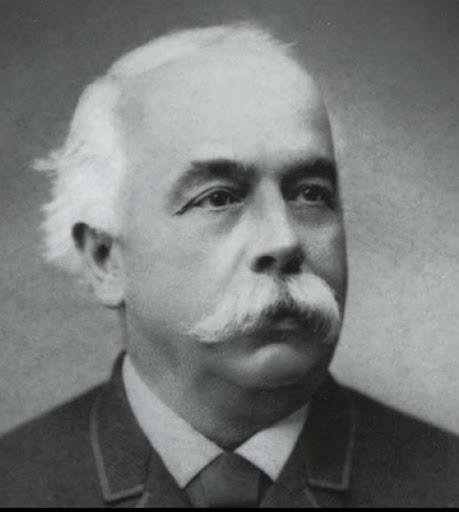

Founder
Edouard Heuer
Since 1860, Tag Heuer was founded in Switzerland by Edward Heuer. He started as an apprentice of a watchmaker at the age of 14. Since then he was able to set-up his own watch shop. His ideas and designs for watches become more famous, creating watches no one has ever seen. Till now, the Heuer family passess down the company to the next generation to its current CEO, Jackson Heuer. Keeping the idea of taking watchmaking to new levels of accuracy and performance with our moto "Swiss Avant-Garde Since 1860".